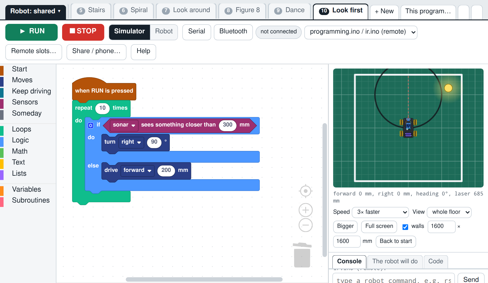

How to plug in the distance sensor
Then use it in Blockly: if it sees something, do this, else do that
1. Find the sonar
2. Which wire is which
3. Find the analog header
4. Make an L
5. How it sees
6. Check it
7. Program it: if ... else

Blockly
In Sensors, find sonar sees something closer than 300 mm. Put it in an if ... else: if it sees something, turn; else, go forward. Or press + New and pick Look first. Connect with Bluetooth, choose Robot, press RUN. Programs with if run from the computer, not from a remote slot.